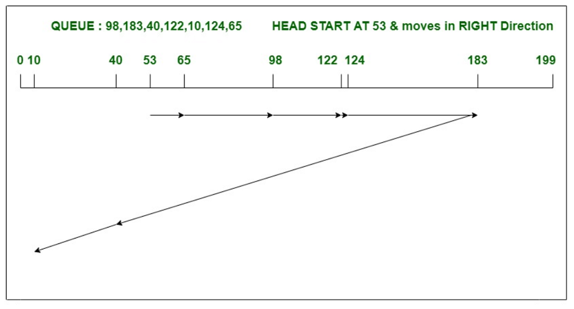
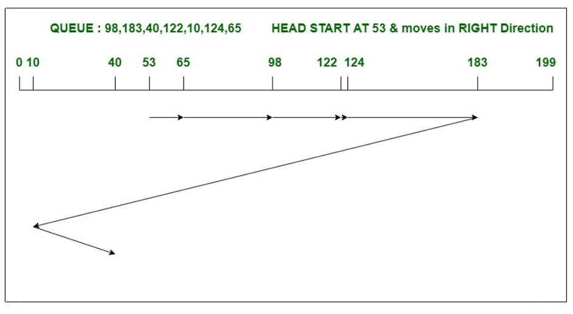

Look/C-Look Disk Scheduling
1. LOOK disk scheduling algorithm :
Look Algorithm is actually an improves version of SCAN Algorithm. In this algorithm, the head starts
from first request at one side of disk and moves towards the other end by serving all requests in
between. After reaching the last request of one end, the head reverse its direction and returns to first
request, servicing all requests in between. Unlike SCAN, in this the head instead of going till last
track, it goes till last request and then direction is changed.
Example –
Consider a disk with 200 tracks (0-199) and the disk queue having I/O requests in the following order as
follows: 98, 183, 40, 122, 10, 124, 65. The current head position of the Read/Write head is 53 and will
move in Right direction . Calculate the total number of track movements of Read/Write head using LOOK
algorithm.

2. C-LOOK disk scheduling algorithm :
C-LOOK is the modified version of both LOOK and SCAN algorithms. In this algorithm, the head starts from
first request in one direction and moves towards the last request at other end, serving all request in
between. After reaching last request in one end, the head jumps in other direction and move towards the
remaining requests and then satisfies them in same direction as before. Unlike LOOK, it satisfies
requests only in one direction.
Example –
Consider a disk with 200 tracks (0-199) and the disk queue having I/O requests in the following order as
follows: 98, 183, 40, 122, 10, 124, 65. The current head position of the Read/Write head is 53 and will
move in Right direction . Calculate the total number of track movements of Read/Write head using C-LOOK
algorithm.

Please enter queries ranging from 0 to 199
Queries:Add head:
Direction: Right: Left: